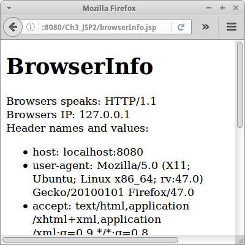

Request and Response
Nach den bisherigen Einführungen, beginnnen wir in diesem Kapitel die wichtigsten Grundsteine zu legen. Wir beschäftigen uns mit dem Request und Response Objekten. Damit können wir auf User Input reagieren. Und wenn wir uns ans erste Semester erinnern, dann heißt das: jetzt fängt es an cool zu werden!
.
Request
Wenn der Browser einen HTTP Request an den Server sendet, dann übermittelt er dabei einiges an Informationen. In JSP werden diese Informationen in dem JSP-Objekt request gebündelt und können dann sehr einfach verwendet werden, wie wir gleich sehen werden.
.
Reverse Text
Im ersten Kapitel haben wir einfache HTML Formulare erstellt. Allerdings, was wir im ersten Kapitel noch nicht konnten war irgend etwas mit den eingegebenen Daten anzufangen. Dazu kommen wir jetzt. Nehmen wir an wir haben folgendes Formular:
<html> <body> <h1>Reverse Text</h1> <p>Enter text to reverse:</p> <form action="reverseTextLogic.jsp" method="GET" > <input type="text" name="textToReverse" /> <input type="submit" value="Reverse" /> </form> </body> </html>
Das Action-Attribut des Form Tags besagt wohin die vom Benutzer eingegebenen Daten geschickt werden sollen. In diesem Beispiel an die Seite reverseTextLogic.jsp:
<%!
private String reverseText(String s) {
String ret = "";
for (int i = s.length() - 1; i >= 0; i--) {
ret += s.charAt(i);
}
return ret;
}
%>
<%
String text = request.getParameter("textToReverse");
out.println("The reverse text is: " + reverseText(text));
%>
Das ist eine ganz normale JSP Seite. Neu ist hier die Verwendung des request Objekts. Wir bitten das Request Objekt uns den Parameter namens "textToReverse" zu geben. Dieser war vorher als HTML Input Tag definiert worden. Dann rufen wird die Methode reverseText() auf, und senden das Resultat zurück an den Browser mittels out.println().
.
Wie werden die Daten geschickt?
Nun stellt sich die Frage, wie werden denn die Daten vom Browser zum Server geschickt? Wenn wir uns im letzten Beispiel die Adresszeile im Browser genau ansehen, sehen wir, dass dort folgendes steht:
.../reverseTextLogic.jsp?textToReverse=racecar
D.h., am Ende des Dateinamens reverseTextLogic.jsp wurde einfach ein Fragezeichen, dann der Name des Input-Tags gefolgt von einem Gleichheitszeichen, und schließlich dem Wert den der Benutzer eingegeben hat. Also die Daten werden einfach über die Adresszeile, die URI geschickt!
Man nennt das Ganze einen Uniform Resource Identifier, kurz URI (ähnlich zu URL) [1], und die Details dazu sind in der RFC 3986 spezifiziert [4]. Dort findet man auch die allgemeine Form einer URI:
scheme:[//[user:password@]host[:port]][/]path[?query][#fragment]
Alles was in eckigen Klammern ist, ist optional. Ein Beispiel wäre also:
http://localhost:8080/Ch3_JSP2/reverseTextLogic.jsp?textToReverse=racecar
Hat man mehrere Input-Tags, dann werden die einzelnen Key-Value Paare, auch Parameter genannt, noch durch ein Und-Zeichen (Kaufmanns-Und: &) getrennt.
.
Login
Betrachten wir als zweites Beispiel ein Login Formular, im Prinzip identisch mit dem aus Kapitel eins:
<html>
<body>
<h1>Login</h1>
<form action="loginLogic.jsp" method="GET">
UserID: <input type="text" name="userId"/><br/>
Password:<input type="password" name="password"/><br/>
<input type="submit" value="Login"/>
</form>
</body>
</html>
Die Daten werden an loginLogic.jsp Seite geschickt, wo diese dann auf Korrektheit geprüft werden:
<%
String id = request.getParameter("userId");
String passwd = request.getParameter("password");
if ((id != null) && (passwd != null)) {
if ((id.equals("ralph")) && (passwd.equals("123456"))) {
out.println("Welcome!");
} else {
out.println("Please, try again!");
}
}
%>
Interessant ist auch hier wieder die Adresszeile,
.../loginLogic.jsp?userId=ralph&passowrd=123456
die beinhaltet nämlich Benutzername und Passwort im KLARTEXT! Und beide werden sogar im Browserverlauf gespeichert! Offensichtlich keine so gute Sache.
.
GET vs POST
Kann man da was machen? Die Lösung ist überraschend einfach: man muss lediglich in der Zeile
<form action="loginLogic.jsp" method="GET">
das Wort GET durch das Wort POST ersetzen:
<form action="loginLogic.jsp" method="POST">
Im ersten Fall spricht man von einem HTTP GET Request, im zweiten von einem HTTP POST Request. Vergleichen wir die beiden kurz:
- Ein GET Request kann durch einen Link oder ein Formular ausgelöst werden, ein POST Request nur durch ein Formular.
- Die Daten (Parameter) werden bei einem GET Request über die Adresszeile gesendet, sind also im Klartext zu lesen, und werden im Browserverlauf gespeichert. Bei einem POST Request werden die Parameter als Teil des HTTP Headers geschickt, sind also nicht so einfach zu sehen, und werden nicht im Browserverlauf gespeichert. Besonders sicher sind die Daten aber auch beim POST Request nicht.
- Die Menge der Daten ist bei einem GET Request auf ein bis zwei Kilobyte begrenzt, bei einem POST Request kann sie aber mehrere Gigabyte betragen.
Am besten wir prüfen das selbst mal nach, idealerweise sollten wir aber vorher den Browserverlauf löschen, oder einen anderen Browser verwenden.
SEP: Wenn möglich sollte man immer den POST Request bevorzugen.
.
BrowserInfo
Über das Request Objekt erhalten wir Zugriff auf die Parameter, aber das request Objekt enthält zusätzlche Informationen über den Browser der gerade auf unseren Server zugreift. Dazu gehört das Protokoll das der Browser versteht, seine IP Adresse und sein Port, aber auch andere interessante Informationen:
- user-agent: Mozilla/5.0 (X11; Ubuntu; Linux x86_64; rv:47.0) Gecko/20100101 Firefox/47.0
- accept: text/html,application/xhtml+xml,application/xml;q=0.9,*/*;q=0.8
- accept-language: en-US,en;de
- accept-encoding: gzip, deflate
- referer: http://localhost:8080/Ch3_JSP2/
- cookie: cook=ie; JSESSIONID=c819f064abc3432b265c0bbf3a20
- connection: keep-alive
Wir können u.a. feststellen, dass der Nutzer den Mozilla Browser verwendet und dass auf seinem Rechner ein 64-bit Ubuntu läuft. Außerdem scheint der Nutzer amerikanisches Englisch und Deutsch zu sprechen. Wir sehen auch, von woher (Referer) der Nutzer auf unsere Seite gekommen ist. Und wir können vermuten, dass er gerne Weihnachts-Plätzchen (Cookies) mag.
.
Response
Kommen wir zum zweiten großen Thema dieses Kapitels, dem response Objekt. Es entspricht der HTTP Response, ist also die Antwort des Servers an den Browser. Der Server sendet alle seine Daten als HTTP Response an den Browser. Auch hier wird die Information mit einem JSP Objekt, dem response Objekt gesammelt, bevor sie abgeschickt werden.
.
Redirect
Aus JSP Sicht ist das response Objekt einfach wieder ein vordefiniertes Objektt. Sehr häufig wird das response Objekt für Redirects verwendet:
<%
String redirect = request.getParameter("redirect");
if ( (redirect != null) && (redirect.equalsIgnoreCase("true")) ) {
response.sendRedirect("index.jsp");
return; // this is very important!
} else {
out.println("Hi there!");
}
%>
Wir überprüfen also ob der Parameter redirect auf true gesetzt wurde, und falls ja schicken wir den Nutzer einfach zur index.jsp Seite. Andernfalls senden wir ihm ein "Hi there!". So etwas ist ganz nützlich für Logins z.B..
Weder vor noch nach dem Redirekt dürfen wir irgendwelche Daten an den Browser schicken, also z.B. out.println() oder ähnliches. Denn der Redirekt funktioniert nicht serverseitig sondern clientseitig. Was ein Redirekt tut, er schickt dem Browser einen 302er Status Code im HTTP Header:
response.setStatus(response.SC_MOVED_TEMPORARILY); // HTTP status code 302
response.setHeader("Location", "index.jsp");
Das veranlasst den Browser dann dazu die neue Seite anstelle der alten zu laden. Der Server sagt also dem Browser, dass er noch mal einen HTTP Request schicken soll, dieses mal aber an die neue Seite. Wenn wir nicht diesen Umweg über den Browser gehen wollen, gibt es den RequestDispatcher. Den verwendet man allerdings eher selten, wir werden ihn im Datenbank Kapitel kennen lernen.
.
Error
Manchmal geht etwas schief. Dann können wir dem Browser einen Fehlercode schicken. Der bekannteste ist der '404' oder auch "file not found":
<% response.sendError(response.SC_NOT_FOUND, "Hi there!"); %>
Wir tun das auch über das response Objekt. Effektiv wird dadurch im HTTP Header ein 404 Status Code gesendet. Es gibt noch ganz viele andere Fehler, Details findet man in der RFC 2616 zum HTTP Protokoll.
Es sei noch angemerkt, dass nicht alle Browser die genaue Fehlermeldung weitergeben, der Internet Explorer hatte die Angewohnheit, einfach zu sagen, dass ein Fehler aufgetreten ist, welcher Fehler genau, hat er allerdings verschwiegen.
.
Excel
Eine anderer interessante Anwendung für das response Objekt, ist der Content Type. Darüber können wir dem Browser mitteilen, was für Daten im Anhang stecken. Normalerweise ist das "text/html". Wir können das aber ändern:
<%
response.setContentType("application/vnd.ms-excel");
for (int i = 0; i < 10; i++) {
out.print("" + i + ",");
}
%>
In dem Beispiel erklären wir dem Browser was jetzt kommt ist ein Excel Spreadsheet. Der Browser fragt den Benutzer dann was dieser mit den Daten zu tun wünscht. Eine Option wäre die Daten direkt mit OpenOffice Calc oder Microsoft Excel zu öffnen.
.
Image
Genauso können wir auch Bild Dateien im "Rohformat" an den Browser schicken. Wir sagen dem Browser, was jetzt kommt is ein "image/jpeg":
<%@page import="java.io.*" %>
<%@page import="java.net.*" %>
<%
response.setContentType("image/jpeg");
OutputStream os = response.getOutputStream();
String filePath = getServletContext().getRealPath("/");
String imagePath = filePath + "Mona_Lisa.jpg";
InputStream is = new FileInputStream(imagePath);
byte[] buffer = new byte[32 * 1024]; // 32k buffer
int bytesRead = 0;
while ((bytesRead = is.read(buffer)) != -1) {
os.write(buffer, 0, bytesRead);
}
os.flush();
os.close();
%>
Der Browser erwartet dann ein Bild im Rohformat. Wir sollten uns über den Unterschied im Klaren sein: es handelt sich hier nicht um HTML oder einen Link. Im Allgemeinen, ist dieser Ansatz nicht zu empfehlen, da er relativ langsam ist. Manchmal macht er aber durchaus Sinn: z.B. wenn die Bilder dynamisch generiert werden, oder wenn die Bilder geschützt werden sollen, also nicht für jeden zugänglich sein sollen.
.
Review
In diesem Kapitel haben wir das Request und das Response Objekt kennen gelernt. Sie sind Abbildungen der unterliegenden HTTP Requests und Responses. Mit ihnen können wir z.B.
- auf Formular Daten zugreifen
- Informationen über den Browser erfahren
- den Nutzer woanders hinschicken und
- den Content-Type ändern.
Wir werden gleich noch viel mehr praktische Beispiele sehen wofür die beiden gut sein können.
.
Projekte
Nachdem wir gesehen haben wie die Request und Response Objekte funktionieren, wollen wir uns jetzt ein paar interessante Beispiele ansehen.
.
Calculator
Im zweiten Semester (Algorithmen) haben wir gelernt wie man mittels der Stack Klasse mathematische Ausdrücke berechnen kann. Den Code von damals können wir ganz einfach in eine Webanwendung überführen.
Die Anwendung soll ähnlich wie bei unserer Login Applikation aus zwei Teilen bestehen: dem ersten, calculator.jsp, in dem der Nutzer den mathematischen Ausdruck eingibt, also einfach ein Formular mit einem Textfeld. Im zweiten Teil, calculatorLogic.jsp, deklarieren wir dann die beiden Methoden convertFromInfixToPostfix() und evaluate() im Deklarationsteil: <%! ... %> (Die beiden Methoden sollten noch irgendwo in dem Ordner vom zweiten Semester rumliegen). Der Rest ist dann trivial:
<%
String infix = request.getParameter("mathExpression");
String postfix = convertFromInfixToPostfix(infix);
int result = evaluate(postfix);
out.println("The result is: " + result);
%>
.
 Captcha
Captcha
Captcha's werden benutzt um Bots von Menschen zu unterscheiden. Man findet diese häufig wenn man sich neu irgendwo anmeldet. Das ist deswegen notwendig, weil es überraschend viele böse Buben im Internet gibt, die versuchen mittels Bots (in der Regel irgendwelche Skripten) sich so viele Accounts zu ergaunern wie möglich, um damit dann wieder irgendwelchen Unsinn zu treiben (Spam verschicken z.B.).
Unsere Catpcha's sind etwas trivial, und verdienen eigentlich den Namen gar nicht, aber die echten funtionieren nach dem gleichen Prinzip. Die Anwendung besteht wieder aus zwei Teilen, captcha.jsp und captchaLogic.jsp. Im ersten Teil stellen wir dem Kandidaten (Roboter oder Mensch) eine Frage. Die muss natürlich zufällig sein, und sich jedesmal ändern, sonst könnte der Roboter ja die Antwort erraten.
<% int a = (int) (Math.random() * 9) + 1; int b = (int) (Math.random() * 9) + 1; %> <!DOCTYPE html> <html> <body> <h1>Captcha</h1> <p>Please verify that you are a not a robot: <br /> What is the sum of <%= a%> + <%= b%>?</p> <form action="captchaLogic.jsp" method="GET"> <input type="number" name="sum"/> <input type="hidden" name="result" value="<%= a + b%>"/> <input type="submit" value="Verify"/> </form> </body> </html>
Im zweiten Teil müssen wir dann lediglich feststellen, ob der Kandidat richtig gerechnet hat. Dazu müssen wir allerdings wissen, was die richtige Lösung ist. Dafür können wir das "hidden" Tag verwenden.
Besonders gut ist unsere Captcha App nicht gerade, denn wenn wir via "View Sourcecode" uns das generierte HTML ansehen, dann steht da die Antwort, und ein paar schlaue Script-Kiddies haben unser Captcha dann auch sofort geknackt.
.
Cookies
Hier handelt es sich nicht um Chocolate Chip Cookies, oder um Vanillekipferl. Bei den Cookies die wir verwenden handelt es sich um kleine Stücke Text (max. 4096 Zeichen) die wir dem Browser schicken können. Der Browser zeigt diesen Text aber nicht an, sondern speichert ihn. Das folgende Beispiel zeigt wie wir Cookies setzen, und wie wir alle Cookies ausgeben können:
<html>
<body>
<%
// first add the new cookie:
String name = request.getParameter("name");
String value = request.getParameter("value");
if ((name != null) && (name.length() > 0)) {
Cookie cookie = new Cookie(name, value);
cookie.setMaxAge(365 * 24 * 60 * 60); // one year
response.addCookie(cookie);
}
// then list all cookies:
Cookie[] cookies = request.getCookies();
out.println( "<ul>");
if (cookies != null) {
for (int i = 0; i < cookies.length; i++) {
out.println("<li>" + cookies[i].getName() + " = " + cookies[i].getValue() + "</li>");
}
}
out.println( "</ul>");
%>
</body>
</html>
Bei jedem Request schickt der Browser alle Cookies die er von uns bekommen hat mit. Das können bis zu 50 Cookies sein. Er schickt aber keine Cookies von anderen Websites, normalerweise.
Erst einmal scheinen Cookies relativ nutzlos, es stellt sich aber heraus, dass sie eine der nützlichsten Erfindungen im Zusammenhang mit dem Internet sind. Die Browser verstecken die Cookies gerne, aber wenn man lange genug sucht, findet man sie immer. Rechts ist ein Beispiel von Cookies die der Website "blogspot.de" auf meinem Rechner gespeichert hat. Die Cookies 'umta', 'umtb' usw. sind recht bekannt, da sie von Google Analytics kommen. Generell werden diese Art von Cookies verwendet um Leute zu tracken. Man kann aber alles mögliche in den Cookies speichern, so lange es weniger als 4 Kilobyte ist.
Cookies sind nicht besonders sicher. Obwohl eigentlich nur der Website der die Cookies gesetzt hat, diese auch auslesen können sollte, finden sich immer wieder Tricks das zu umgehen. Deswegen ist es nicht besonders schlau Passwörter in Cookies zu speichern.
SI: Man sollte nie Passwörter oder andere sensitive Informationen in Cookies speichern.
.
 Editor
Editor
Als nächstes möchten wir einen kleinen Texteditor schreiben. Auch dieses Beispiel besteht wieder aus zwei Teilen, einer editor.jsp und einer editorLogic.jsp Seite. Die Seite editor.jsp haben wir schon im letzten Kapitel erstellt. Deswegen kommen wir gleich zur editorLogic.jsp Seite:
<%
String text = request.getParameter("text");
if (text != null) {
try {
FileWriter fw = new FileWriter("editor.txt");
fw.write(text);
fw.close();
} catch (Exception e) {
System.out.println(e);
}
}
response.sendRedirect("editor.jsp");
%>
Wir versuchen also den Text den der User eingegeben hat in der Datei "editor.txt" zu speichern, und danach schicken wir den Nutzer einfach zur editor.jsp Seite zurück. Sollte allerdings etwas schief gehen, dann schreiben wir eine Fehlermeldung in den "System.out" Stream, besser wäre aber den Logger zu verwenden.
Es stellen sich hier die interessante Frage: wohin wird die Datei "editor.txt" geschrieben? Was passiert mit der Datei wenn der Server neu gestartet wird? Und was wenn die Applikation neu deployed wird?
.
Upload
Wenn wir es unseren Nutzern ermöglichen wollen Daten auf unseren Server hochzuladen, z.B. ein Profilbild, dann ist der erste Schritt relativ einfach:
<html>
<body>
<h1>Upload</h1>
<p>Select a file to upload:</p>
<form action="uploadLogic.jsp"
method="POST"
enctype="multipart/form-data">
<input type="file" name="file"/><br/>
<input type="submit" value="Upload Image"/>
</form>
</body>
</html>
Wir benutzen zum einen das "file" Inputfeld. Zum anderen müssen wir im "form" Tag noch mitteilen, dass die Daten vom Typ "multipart/form-data" sind.
Der zweite Schritt ist allerdings etwas komplizierter. Das hat damit zu tun, dass u.U. nicht nur eine Datei hochgeladen wird, sondern mehrere. Die muss man dann auseinanderfieseln. Da wir nicht die ersten sind die dieses Problem haben, gibt es in der Apache Commons Bibliothek [2] drei Klassen die uns dabei unterstützen:
<%
int maxFileSize = 5000 * 1024; // 5 MB
int maxMemSize = 1000 * 1024; // 1 MB
boolean isMultipart = ServletFileUpload.isMultipartContent(request);
if (isMultipart) {
ServletContext servletContext = this.getServletConfig().getServletContext();
// Create a factory for disk-based file items
DiskFileItemFactory factory = new DiskFileItemFactory();
factory.setSizeThreshold(maxMemSize);
File repository = (File) servletContext.getAttribute("javax.servlet.context.tempdir");
factory.setRepository(repository);
// Create a new file upload handler
ServletFileUpload upload = new ServletFileUpload(factory);
upload.setSizeMax(maxFileSize);
// Parse the request
List<FileItem> items = upload.parseRequest(request);
Iterator<FileItem> iter = items.iterator();
while (iter.hasNext()) {
FileItem item = iter.next();
if (!item.isFormField()) {
String filePath = servletContext.getRealPath("/");
File uploadedFile = new File(filePath + item.getName());
item.write(uploadedFile);
}
}
out.println("Upload successful!");
} else {
out.println("No file uploaded");
}
%>
Die Variable filePath enthält den Pfad wo unsere hochgeladenen Dateien gespeichert werden. Dateien auf unseren Server hochzuladen ist nicht ganz unproblematisch, deswegen haben wir einige Schranken eingebaut, was die Grösse der Dateien angeht die wir akzeptieren. Unvorsichtige Nutzer oder Hacker können unseren Website in echte Schwierigkeiten bringen, wenn zu viele oder zu große Dateien hochgeladen werden.
SI: Hacker nutzen gerne Buffer Overflows um Zugriff auf unseren Server zu erlangen. Dies gelingt Ihnen manchmal durch das Hochladen sehr grosser Dateien.
.
StateURL
Sehr häufig möchten wir Nutzer unseres Websites unterscheiden können, z.B. wenn die bei uns was kaufen wollen. Man könnte es mit der IP Adresse versuchen. Die taugt aber nicht, weil z.B. bei Firmen es so aussieht wie wenn alle Mitarbeiter der Firma die gleiche IP Adresse haben. Also brauchen wir einen andere Lösung.
Eine ganz einfache Lösung für das Problem ist das sogenannte "URL-Rewrite": dazu hängen wir an jede URL unseres Websites einen Zusatz, z.B.
...stateURL.jsp?sessionId=227
Wenn jetzt alle URLs die von Nutzer "227" kommen diesen Zusatz haben, können wir Nutzer "227" wiedererkennen. Im Code sieht das so aus:
<%
String sessionId = request.getParameter("sessionId");
if ( sessionId == null ) {
sessionId = "" + (int)(Math.random()*1000);
}
%>
<html>
<body>
<h1>State with URL-Rewrite</h1>
<p>Your sessionId is <%= sessionId %></p>
<p><a href="stateURL.jsp?sessionId=<%= sessionId %>">some link</a></p>
</body>
</html>
Wir stellen also zunächst fest, ob der Nutzer bereits eine sessionId hat. Falls nein, generieren wir eine neue. Danach fügen wir zu allen Links die wir in unserem Website verwenden den Zusatz "?sessionId=227". Das kann man auch automatisch machen, aber uns geht es ja darum das Prinzip zu verstehen.
Wir können testen ob unser Beispiel auch wirklich funktioniert, in dem wir zwei verschieden Browser öffnen und unsere Seite besuchen. Die verschiedenen Browser sollten verschiedene sessionIds haben.
Ein paar Dinge die wir noch checken sollten:
- Was passiert wenn wir die gleiche Seite in verschiedenen Browsertabs öffnen?
- Könnte es passieren, dass zufällig zwei Nutzer die gleiche sessionId bekommen (collision)?
- Könnte sich ein Nutzer einfach als ein anderer ausgeben, indem er die sessionId des anderen übernimmt (session hijacking)?
.
StateCookie
Eine etwas einfachere Methode Nutzer eindeutig zu identifizieren ist mit Hilfe von Cookies. Das erste Mal wenn ein Nutzer auf unsere Seite kommt, kreiiren wir ein Cookie mit dem Name "sessionId" und initialisieren es mit einem Zufallswert. Danach, können wir den Nutzer über sein Cookie eindeutig identifizieren.
<%
String sessionId = null;
// first check if cookie was set already
Cookie[] cookies = request.getCookies();
if (cookies != null) {
for (int i=0; i<cookies.length; i++) {
if (cookies[i].getName().equals("sessionId")) {
sessionId = cookies[i].getValue();
}
}
}
// if no cookie was found create one
if ( sessionId == null ) {
sessionId = "" + (int)(Math.random()*1000);
Cookie cookie = new Cookie("sessionId", sessionId);
cookie.setMaxAge(1 * 60); // expire in 1 min
response.addCookie(cookie);
response.sendRedirect("stateCookie.jsp");
return;
}
%>
<!DOCTYPE html>
<html>
<body>
<h1>State with Cookie</h1>
<p>Your sessionId is <%= sessionId %></p>
<p><a href="stateCookie.jsp">some link</a></p>
</body>
</html>
Obwohl der JSP Code etwas komplizierter aussieht, ist dieser Ansatz einfacher, denn wir müssen nicht an jede URL etwas anhängen. D.h. unser HTML wird einfacher. Auch hier sollten wir erst mal wieder testen ob unser Beispiel auch wirklich funktioniert, in dem wir zwei verschieden Browser öffnen und unsere Seite besuchen.
Ein paar Dinge die wir noch checken sollten:
- Was passiert wenn wir die gleiche Seite in verschiedenen Browsertabs öffnen?
- Könnte es passieren, dass zufällig zwei Nutzer die gleiche sessionId bekommen (collision)?
- Könnte sich ein Nutzer einfach als ein anderer ausgeben (session hijacking)?
- Was passiert wenn der Nutzer keine Cookies zulässt?
.
 NumberGuess
NumberGuess
NumberGuess sollte aus dem ersten Semester noch bekannt sein. In dem Spiel "denkt" sich der Computer eine Zahl zwischen 0 und 99, und wir müssen diese erraten. Falls wir falsch raten, sagt uns der Computer ob seine Zahl höher oder niedriger als unsere geratene war.
Der Hauptunterschied zum ersten Semester ist, dass wir im Web nicht alleine sind. Soll heißen, es könnten ja mehr als nur eine Person auf unser Spiel zugreifen. Sollen die anderen dann die gleiche Zahl erraten, oder bekommt jede Person ihre eigene Zahl? Ersteres wäre ganz einfach, deswegen beschäftigen wir uns mit Zweiterem.
Mit unserem momentanen Kenntnisstand, gibt es zwei Möglichkeiten dies zu tun: mit Cookies oder mit dem Hidden-Tag. Da unsere Nutzer sicherheitsbewusst sind und keine Cookies zulassen, verwenden wir das Hidden-Tag.
<html> <body> <h1>NumberGuess</h1> <% ... %> <p>Enter your guess:</p> <form action="numberGuess.jsp" method="POST" > <input type="number" name="number" required="true"/> <input type="hidden" name="numberToGuess" value="<%= numberToGuess %>" /> <input type="submit" value="Guess" /> </form> </body> </html>
Als erstes müssen wir feststellen, ob unsere Seite das erste Mal aufgerufen wurde. Das können wir feststellen indem wir checken ob der Parameter "number" schon gesetzt wurde. Falls nicht, dann generieren wir einfach eine Zufallszahl zwischen 0 und 99:
<%
int numberToGuess = 0;
if ( request.getParameter("number") == null ) {
// we are here the first time
Random rand = new Random();
numberToGuess = rand.nextInt(99);
Falls ja, dann müssen wir die Zahl des Nutzers mit der Zahl des Computers vergleichen.
} else {
// we have been here before
numberToGuess = Integer.parseInt( request.getParameter("numberToGuess") );
int guess = Integer.parseInt( request.getParameter("number") );
if ( numberToGuess == guess ) {
out.println("You are the greatest!");
} else if ( guess < numberToGuess ){
out.println("Your guess is less than the number.");
} else {
out.println("Your guess is higher than the number.");
}
}
%>
Was noch fehlt ist ein Zähler, der mitzählt wie häufig die Person raten musste bis sie die richtige Antwort hatte. Das könnte man über ein zusätzliches Hidden-Tag lösen. Wollen wir aber nicht, weil wir im nächsten Kapitel eine bessere Lösung sehen werden (Session).
Bevor zum nächsten Projekt gehen, gibt es noch einige Dinge über die wir uns kurz Gedanken machen sollten:
- Wie kann man das Spiel abbrechen und neu starten?
- Was müsste man machen, damit das Formular am Ende, also wenn der Nutzer richtig geraten hat, nicht mehr gezeigt wird?
- Was passiert wenn der Nutzer gar nichts, oder Unsinn eingibt?
- Was würde passieren wenn der Nutzer "View Source" kennt, also sich den HTML Quelltext anzeigen lässt?
.
GuestBook
Bei der GuestBook Anwendung geht es darum, dass Besucher unserer Website Kommentare hinterlassen können. Die Anwendung besteht aus zwei Teilen, dem ersten, guestBook.jsp, in dem die Nutzer ihre Kommentare schreiben können, das ist einfach ein Formular mit einer Textarea.
Im zweiten Teil, guestBookLogic.jsp, schreiben wir den Kommentar erst Mal in eine Textdatei.
<%@page import="java.io.*"%>
<%
// write comment to file:
String text = request.getParameter("comment");
if (text != null) {
try {
FileWriter fw = new FileWriter("guestBook.txt", true);
fw.write("<li>" + text + "</li>");
fw.close();
} catch (Exception e) {
// should log error to log file
}
}
// show guest book:
%>
Anschliessend zeigen wir den Inhalt dieser Textdatei an, damit wir alle Kommentare lesen können.
<!DOCTYPE html>
<html>
<body>
<h1>GuestBook</h1>
<ul>
<%
try {
BufferedReader br = new BufferedReader(
new FileReader("guestBook.txt") );
while (true) {
String line = br.readLine();
if ( line == null ) break;
out.println( line );
}
br.close();
} catch (Exception e) {
// should log error to log file
}
%>
</ul>
</body>
</html>
Wichtig ist, dass wir beim FileWriter das "true" Flag setzen, das bedeutet, dass er eine existierende Datei nicht löscht, sondern die neuen Einträge anhängt.
Auch in dieser einfachen Anwendung gibt es wieder einiges zu bedenken:
- Was passiert wenn der Nutzer so Unsinn wie "<script>alert('hi');</script>" eingibt (XSS)?
- Manche Nutzer lieben Schimpfwörter und haben nichts besseres zu tun, als den ganzen Tag Webformulare mit selbigen zu befüllen. Wie könnte man das verhindern (Stopwords)?
- Wo wird die Datei "guestBook.txt" eigentlich gespeichert?
- Was würde passieren wenn ein Nutzer sehr viel Text (Gigabytes oder Terrabytes) eingibt?
.
SI: Wir sollten niemals Daten trauen die vom Nutzer kommen und immer mit dem Schlimmsten rechnen.
.
HighScore
Für viele Spiele benötigt man eine Highscore Liste. Die sollte natürlich idealerweise sortiert sein, und zwar derart, dass der Spieler mit dem höchsten Score als erstes gelistet wird. Wenn wir uns an unser zweites Semester erinnern, dann sollte eigentlich die TreeMap die Datenstruktur unserer Wahl sein:
TreeMap<Integer,String> map = new TreeMap<Integer,String>(Collections.reverseOrder());
Der Key ist der Score und der Value ist die UserId des Nutzers.
Auch hier benötigen wir wieder zwei Seiten: über die highScore.jsp fügen wir einen neuen Score hinzu. Die highScoreLogic.jsp Seite liest zunächst die alten Scores von einer Datei namens "highScores.txt", fügt den neuen Wert hinzu, speichert die Scores, und abschliessend werden sie angezeigt. Unsere Seite besteht aus drei Teilen: der Definition der Methoden,
<%! private static final String HIGH_SCORE_FILE_NAME = "highScores2.txt"; private TreeMap<Integer, String> readScoresFromFile() { TreeMap<Integer, String> map = null; if (!(new File(HIGH_SCORE_FILE_NAME)).exists()) { map = new TreeMap<Integer, String>(Collections.reverseOrder()); } else { try { ObjectInputStream ois = new ObjectInputStream( new FileInputStream(HIGH_SCORE_FILE_NAME)); map = (TreeMap<Integer, String>) ois.readObject(); ois.close(); } catch (Exception e) {} } return map; } private void writeScoresToFile(TreeMap<Integer, String> map) { try { ObjectOutputStream oos = new ObjectOutputStream( new FileOutputStream(HIGH_SCORE_FILE_NAME)); oos.writeObject(map); oos.close(); } catch (Exception e) {} } %>
dem JSP das die Parameter einliest,
<%
// save score to file:
String userId = request.getParameter("userId");
String score = request.getParameter("score");
TreeMap<Integer, String> sortedScoreMap = readScoresFromFile();
if ((userId != null) && (score != null)) {
sortedScoreMap.put(Integer.parseInt(score), userId);
writeScoresToFile(sortedScoreMap);
}
%>
und dem HTML, dass die HighScores anzeigt:
<!DOCTYPE html>
<html>
<body>
<h1>HighScore</h1>
<ol>
<%
for (Integer scr : sortedScoreMap.keySet()) {
out.println("<li>" +scr+": "+sortedScoreMap.get(scr) + "</li>");
}
%>
</ol>
</body>
</html>
.
PizzaMenu
Im letzten Kapitel haben wir uns schon darum gekümmert, dass das Menü unseres Pizza Restaurants gut aussieht. Was wir jetzt noch machen wollen ist, dass das Menü einfach zu ändern ist, was ja in guten Restaurants häufiger vorkommen soll.
Die Anwendung besteht wieder aus zwei Seiten, einer pizzaMenu.jsp und einer pizzaMenuLogic.jsp. Erstere besteht einfach aus einer Textarea und einem Submit Knopf. Und Zweitere haben wir eigentlich fast schon geschrieben, wir müssen eigentlich nur noch den String menu aus dem Parameter holen:
<%
String menu = request.getParameter("menu");
if (text != null) {
...
}
Wir wollen aber noch einen Schritt weitergehen: anstelle wie wir es im letzten Kapitel getan haben, das generierte Menu einfach an den Browser zu schicken, wollen wir es in eine Datei namens pizzaMenu.html generieren:
<%
...
try {
String path = request.getServletContext().getRealPath("/");
FileWriter fw = new FileWriter(path+"pizzaMenu.html");
fw.write("<!DOCTYPE html><html><body>");
fw.write("<h1>" + br.readLine() + "</h1>");
fw.write("<ul>");
while (true) {
String line = br.readLine();
if (line == null) break;
String[] pizz = line.split(":");
fw.write("<li><strong>" + pizz[0] +":</strong> "+ pizz[1] + "</li>");
}
fw.write("</ul>");
fw.write("</body></html>");
fw.close();
} catch (Exception e) {
// should log error to log file
}
}
response.sendRedirect("pizzaMenu.html");
%>
Anschliessend machen wir einen Redirect auf die dynamisch generierte HTML Seite.
Dies ist unser erstes Beispiel für "dynamic code generation", in diesem Fall HTML. Es ist eine beliebte Technik für High-Volume Websites bei denen sich die Daten nicht zu häufig ändern. Craigslist [3] verwendet diesen Trick.
Im Allgemeinen gilt allerdings, dass man es vermeiden sollte in Webanwendung Dateien zu benutzen. Alternativen sind das session oder application Objekt oder eine Datenbank. Beides werden wir in den kommenden Kapiteln sehen.
.
i18n
Das "Inter" in Internet steht ja für international. Es gibt jetzt manche Leute (zu denen ich gehöre) die sagen, dann machen wir halt alles auf Englisch. Es gibt aber viel mehr Leute die ihre Webseiten aber lieber in ihrer eigenen Sprache lesen. Das ist das Problem das man "Internationalization" nennt, kurz i18n.
Wie wir ja vor kurzem gelernt haben, sagt uns der Browser welche Sprache er spricht. Und wir können diese Information verwenden um Besucher unserer Website je nach Sprache umzuleiten:
<%
String userLocale = request.getHeader("Accept-Language");
Locale locale = request.getLocale();
String userlanguage = locale.getDisplayLanguage();
if ( "de".equals(locale.getLanguage())) {
response.sendRedirect("de/");
return;
}
response.sendRedirect("en/");
return;
%>
In unserem Beispiel haben wir also eine zentrale index.jsp Seite, die den Code oben enthält. Zusätzlich gibt es aber für jede Sprache die wir unterstützen wollen ein Unterverzeichnis, idealerweise mit dem Landeskürzel als Namen, und darin befinden sich dann die sprachspezifischen Seiten. Wenn wir die Anwendung testen wollen, dann müssen wir die Spracheinstellungen in unserem Browser ändern, das ist manchmal ganz einfach (bei Opera) und manchmal nicht.
Der Nachteil dieses Verfahrens ist, dass wir quasi für jede Sprache die wir unterstützen wollen eine komplette Kopie unseres Websites anlegen müssen. Das sorgt für einen gewaltigen Wartungsaufwand. Es gibt hier auch andere Lösungen, in der Regel sind das Frameworks wie Struts [5], JSF [6] oder Spring [7].
.
EscapeXml
Kommen wir zu einem Problem mit dem wir es immer wieder zu tun haben werden: trauen wir dem Input unserer Nutzer? Die Antwort ist ganz klar: Nein! Allerdings sollten wir zwischen zwei Nutzertypen unterscheiden: denen die unabsichtlich etwas falsch machen, also den Trotteln, und denen die absichtlch versuchen unserem Website Schaden zuzufügen, den Hackern.
Zwei Standardverfahren die Hacker gerne anwenden sind Cross-Site Scripting (XSS) und SQL Injection. Wir wollen ersteres demonstrieren und dann zeigen wie man sich dagegen schützt. Als erstes schreiben wir eine Seite escapeXML.jsp die aus einem Formular mit einer Textarea einer Checkbox und einem Submit Knopf besteht. In der Textarea soll folgendes JavaScript stehen, dass hypothetisch ein böser Hacker da reingeschrieben hat:
<script type="text/javascript">
alert("Hi from JavaScript!");
</script>
Das Ziel dieses Formulars ist die Seite escapeXmlLogic.jsp:
<%@page import="de.variationenzumthema.internet.Utility"%>
<%
String text = request.getParameter("text");
if (request.getParameter("escape") != null) {
out.println( Utility.escapeXml(text) );
} else {
out.println(text);
}
%>
Je nachdem, ob wir die Checkbox markiert haben oder nicht, wird einmal der Userinput einfach ausgegeben mittels out.println(), und das andere Mal wird der Userinput noch durch folgende Methode gejagt:
public static String escapeXml(String in) {
in = in.replace("&", "&");
in = in.replace("\"", """);
in = in.replace("'", "'");
in = in.replace("<", "<");
in = in.replace(">", ">");
return in;
}
Das Resultat ist, dass im einen Fall der Browser JavaScript ausführt (kann gefährlich sein), im anderen Fall aber nicht. Ganz ähnlich funktioniert auch die esacpeSQL() Mehode. Da wir diese Methoden so häufig brauchen werden (und auch die weiter unten), haben wir diese in der Utility Klasse zusammengefasst.
SI: Wir sollten dem Input unserer Nutzer niemals trauen.
.
Register**
Wir werden es immer wieder mit längeren Formularen zu tun haben, aus denen wir dann ein Java Objekt (POJO) befüllen sollen. Ein Möglichkeit ist dies von Hand zu tun, so wie wir das bisher gemacht haben. Eine andere ist aber sich eine Konvention zu überlegen und dann die Magie von Reflection zu verwenden.
Die Konvention ist folgende: nehmen wir an wir haben ein Formular mit folgenden Input Feldern:
<form action="registerLogic.jsp" method="POST"> <p> <label>Email:</label> <input type="text" name="emailId"/> </p> <p> <label>Password:</label> <input type="password" name="password"/> </p> ... </form>
Dann deklarieren wir eine entsprechende Klasse, die für jedes der Input Felder ein Attribut mit gleichem Namen hat:
public class User {
private String emailId;
private String password;
...
}
Das ist unsere Konvention.
Und jetzt möchten wir, dass es eine Methode namens extractObjectFromRequest() gibt, der wir einfach das request Objekt übergeben, und die uns dann ein fertiges User Objekt zurückgibt:
<%
User usr =
(User)Utility.extractObjectFromRequest(User.class, request);
%>
und natürlich soll die Methode das für jede mögliche Klasse tun. Und überraschenderweise geht das mit eine paar Zeilen Java Code und Reflection Magic:
public static Object extractObjectFromRequest(Class c,
HttpServletRequest request) {
Object o = null;
try {
o = c.newInstance();
Field[] flds = c.getDeclaredFields();
for (Field f : flds) {
String param = request.getParameter(f.getName());
if ((param != null) && (param.length() > 0)) {
f.setAccessible(true);
Object par = null;
if (f.getType().getName().equals("java.lang.String")) {
par = param;
} else if ...
...
} else {
System.err.println("Unknown type: " + f.getType().getName());
}
if (par != null) {
f.set(o, par);
}
}
}
} catch (Exception e) {
System.err.println(e);
}
return o;
}
Cool, oder?
Nun wenn wir das auch noch mit der escapeXML() und ascapeSQL() Methode kombinieren, sind wir schon auf der ziemlich sicheren Seite.
SEP: Wir sollten bei der Wahl einer Programmiersprache darauf achten, dass diese Reflection unterstützt. Es sei denn wir schreiben Software für Autos, Flugzeuge oder medizinische Geräte.
.
Feedback
Manchmal brauchen unsere Nutzer Feedback wenn sie etwas falsch eingegeben haben. Das kann man sehr einfach lösen wenn man das Feedback einfach beim Redirekt an die URL anhängt:
<%
response.sendRedirect(
"register.jsp?error=Error: You must enter Email!");
return;
%>
und dann an passender Stelle im Formular ausgibt, evtl sogar in roter Farbe:
<%
if ( request.getParameter("error") != null ) {
out.println("<p><strong>"+
request.getParameter("error")+
"</strong></p><br/>");
}
%>
Man kann das auch über den RequestDispatcher machen, wenn man nicht möchte das die Fehlermeldung Teil der URI ist. Später dazu mehr zum RequestDispatcher.
.
Pre-Fill**
Was wirklich ätzend ist, wenn man ein langes Formular ausgefüllt hat, einen klitze-kleinen Fehler gemacht hat, eine komische Fehlermeldung bekommt (wie oben) und dann das ganze Formular noch einmal ausfüllen muss. Das kann doch nicht sein.
Hier gibt es zwei Möglichkeiten: man könnte das serverseitig machen. Das ist aber überraschend unschön. Die andere Möglichkeit ist das clientseitig mit JavaScipt zu tun. Der Trick ist JavaScript dynamisch zu generieren und diese dann in die Seite einzufügen:
<html> <head> <% User usr = new User("ralph@lano.de", Color.GREEN, true, 42, 1.73, new Date()); String javaScript = Utility.createJavaScriptFromObject(usr); out.println(javaScript); %> </head> <body onload="fillFormFromJS()"> <h1>Pre-Fill</h1> ... </body> </html>
Wir gehen davon aus, dass die generierte JavaScript Methode fillFormFromJS() heißt. Nach dem Laden der Seite, wird diese aufgrund des onload Events im <body> Tag ausgeführt.
Die Methode fillFormFromJS() generieren wir dynamisch aus dem POJO, in diesem Fall der Klasse User. Wir definieren also einen String js in dem wir das JavaScript generiern:
public static String createJavaScriptFromObject(Object o) {
String js = "";
js += "<script>";
js += "function fillFormFromJS() {";
js += "var map = {";
try {
Field[] flds = o.getClass().getDeclaredFields();
for (Field f : flds) {
f.setAccessible(true);
String key = f.getName();
Object value = f.get(o);
if (value instanceof String) {
js += "'" + key + "': '" + (String) value + "',";
} else if (value instanceof Integer) {
js += "'" + key + "': '" + (Integer) value + "',";
} else if (value instanceof Double) {
js += "'" + key + "': '" + (Double) value + "',";
} else if (value instanceof Boolean) {
js += "'" + key + "': '" + (Boolean) value + "',";
} else if (value instanceof Color) {
js += "'" + key + "': '" + convertColorToName((Color) value) + "',";
} else if (value instanceof Date) {
//2016-08-17
DateFormat format = new SimpleDateFormat("yyyy-MM-dd");
js += "'" + key + "': '" + format.format((Date) value) + "',";
}
}
} catch (Exception e) {
System.err.println(e);
}
js += "};";
js += "for(var key in map) {";
js += " document.getElementsByName(key)[0].value = map[key];";
js += "}";
js += "}";
js += "</script>";
return js;
}
Dann gehen wir alle Felder des übergebenen Objekts o durch, benutzen etwas Reflection-Magic (rot markiert), und füllen eine JavaScript Map mit key-value Paaren. Hier ist der Key der Name des jeweiligen Form Elements und value ist der Wert den es haben soll. Mit der kleinen Schleifen am Ende dann,
for(var key in map) {
document.getElementsByName(key)[0].value = map[key];
}
setzen wir die Input Felder auf die gewünschten Werte. Damit das Ganze funktoiniert, müssen die Form Elemente die gleichen Namen haben wie die Attribute der User Klasse. Man nennt das auch "coding by convention". Ausserdem, ist das unser zweites Beispiel für "generative coding", in diesem Fall generieren wir JavaScript Code.
.
Research
Manche Themen haben wir hier nur sehr oberflächlich behandelt. Man könnte sich aber das eine oder andere noch etwas detailierter ansehen.
.
Cookies
Zu Cookies gibt es immer ganz viele Fragen. Z.B. was sind den "Secure Cookies" oder "Super-Cookies"? Auch interessant, wo werden die Cookies den gespeichert? Interessant ist auch ein Firefox Plugin namens Lightbeam.
.
RFC 3986
RFC 3986 definiert u.a den Uniform Resource Identifier (URI). Auch diese Spezifikation sollten wir uns mal ansehen, und auch da nach bekannten Namen unter den Autoren suchen. Ausserdem sollten wir uns den Unterschied zwischen URI, URL und URN klar machen.
.
Cross-Site Scripting und SQL Injection
Wir sollten im Internet mal nachlesen was es denn mit "Cross-Site Scripting (XSS)" und "SQL Injection" so auf sich hat.
.
Reflection
Leider wird nirgendwo die Magie der Reflection ordentlich unterrichtet, ausser vielleicht in Hogwarts. Aber mit Sicherheit gibt es im Internet irgendwo ein gutes Tutorial. Bitte Bescheid geben, falls Sie eines finden!
.
Generative Coding und Coding by Convention
Im letzten Abschnitt haben wir die Begriffe "Generative Coding" und "Coding by Convention" mehrmals gesehen. Auch hier macht es Sinn sich mal schlau zu machen was denn dahinter steckt.
.
Fragen
-
Nennen Sie drei Unterschiede zwischen einer HTTP GET und POST Anfrage.
-
Welche Informationen enthält der HTTP Header? Nennen Sie fünf.
- Welche Informationen kann man aus dem JSP "request" Objekt beziehen? Nennen Sie drei Beispiele.
.
Referenzen
Anbei die Referenzen die in diesem Kapitel verwendet wurden.
[1] Uniform Resource Identifier, https://en.wikipedia.org/wiki/Uniform_Resource_Identifier
[2] Apache Commons Bibliothek, https://commons.apache.org/
[3] Craigslist, https://nuremberg.craigslist.de/
[4] RFC 3986, https://www.ietf.org/rfc/rfc3986.txt
[5] Apache Struts, https://struts.apache.org/
[6] JavaServer Faces Technology,, JSF, www.oracle.com/technetwork/java/javaee/javaserverfaces-139869.html
[7] spring, https://spring.io/
.